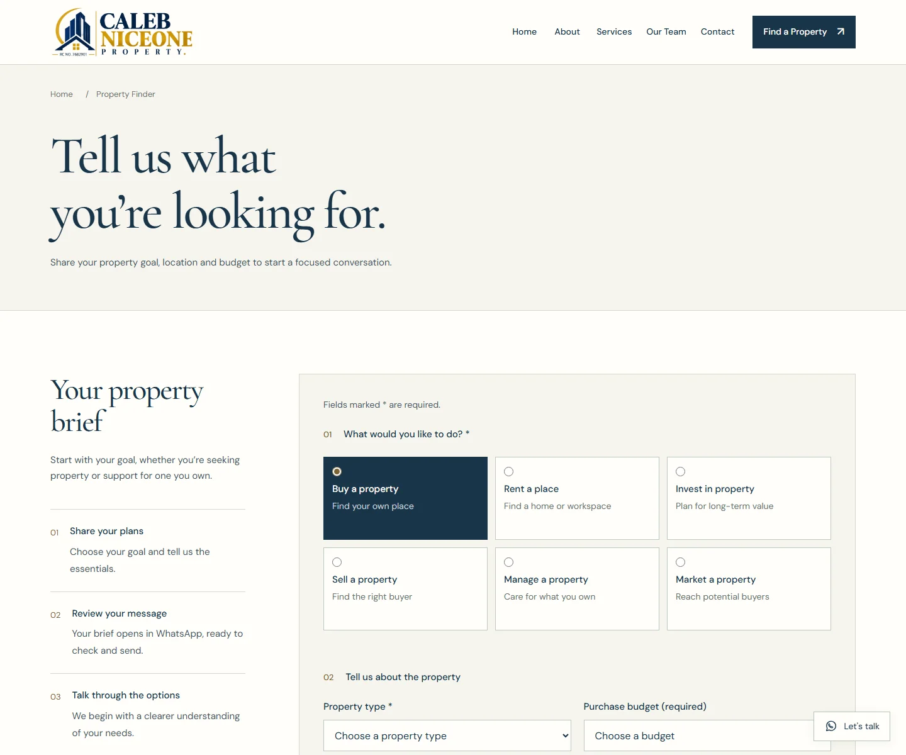

Design and front-end build
I designed and built a seven-page site covering the company, services, leadership, contact, property finder and a recovery page for missing links.
A seven-page property website with a structured path from property goal to enquiry.


I designed and built a seven-page site covering the company, services, leadership, contact, property finder and a recovery page for missing links.
HTML, CSS and JavaScript keep the project deployable to a static host without an install step, database or back end. Six quick-start links set the visitor's goal. The finder updates budget guidance for that goal and clears a previous budget choice when the goal changes, so a stale value cannot carry into a different enquiry.
Visitors can describe a property goal, location, budget and timeline in one brief, then review a prepared WhatsApp message and send it themselves. Direct phone, email and WhatsApp links provide alternatives. No enquiry or conversion figures are available.